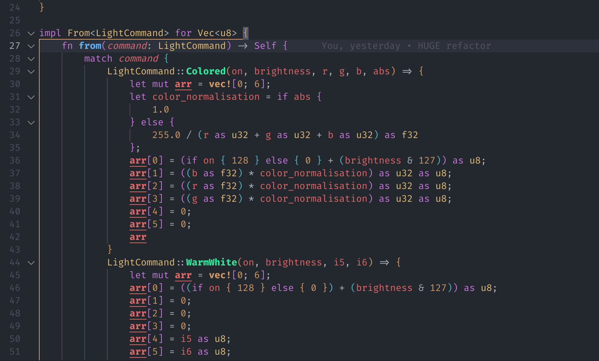
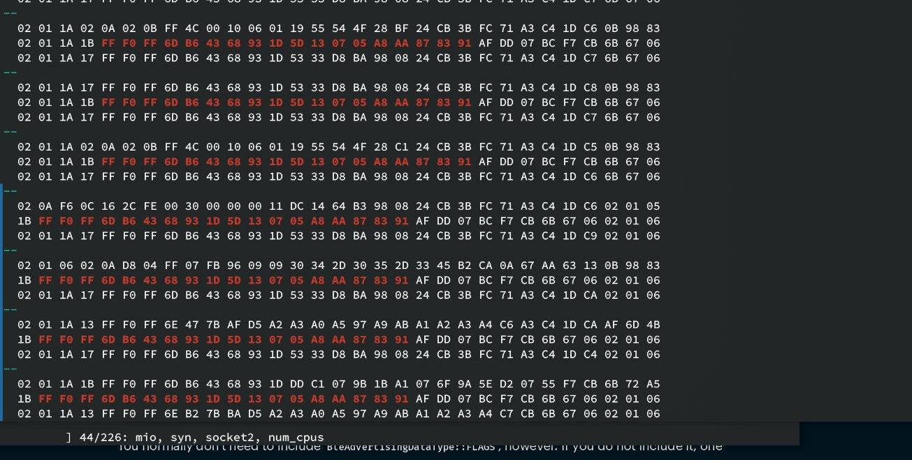

本文内容不得用于商业用途
经过了过去一周的努力，Fastcon BLE 协议终于被（大半部分）逆向出来了 链接到标题
目前已经可以正常控制一只灯，因为我只有这一只灯。
逆向的一些值得记录的过程，已经发在了 part 1 和 part 2 中。这里主要记录一下最后的结果，也就是 Fastcon BLE 协议本身。
Fastcon BLE 协议 链接到标题
Fastcon BLE 是由 broadlink 公司（https://www.ibroadlink.com）于 2021 年推出的一款基于蓝牙的 通信协议。协议本身似乎有专利注册或版权保护。（因此，本文不得用于商业用途）
下文记录我对手中这只 BLE 灯的观察结果，以及我对 Fastcon BLE 协议的理解，以下内容可能随时过时， 并不保证正确性。
数据从上到下传输的过程如下：
0. 设备相关数据 链接到标题
就拿我的灯来说，大概就是这样的：

随后此数据会随 Device Address 会作为 Data 传入下一层，打包为单个设备控制包。
- Device Address 是一个 8 位无符号整数，用于标识设备
1. 单个设备控制包 链接到标题
单个设备控制包的结构如下：
| Starting Byte | Length | Content |
| ------------- | -------- | ------------------------- |
| 0x1 | 0x1 | (data.len() + 1) << 4 | 2 |
| 0x2 | 0x1 | Target Device Address |
| 0x3 | data_len | Data |
其中，data 是上一层传入的数据，data_len 是 data.len()，Target Device Address
则是上一层传入的设备地址。
可以看到，这一层中，仅仅是将数据加了一个包头，并没有做其他的处理。
2. BLE Fastcon 数据层 链接到标题
Body 未加密的内容如下：
| Starting Byte | Length | Content |
| ------------- | -------- | ------------------------------------------------ |
| 0x1 | 0x1 | (i2 & 0b1111) | (i & 0b111) << 4 | forward << 7; |
| 0x2 | 0x1 | sequence |
| 0x3 | 0x1 | safe_key |
| 0x4 | 0x1 | checksum |
| 0x5 | data_len | Data |
Body 的加密过程：
-
前四字节（
i2、sequence、safe_key、checksum）分别与[0x5e, 0x36, 0x7b, 0xc4]进行异或运算。 -
剩下的数据（
data），则与传入的key进行异或运算，也就是：1 2 3for i in 0..data.len() { data[i] = key[i & 3] ^ data[i]; }
需要注意的是：
i似乎是某些 command type，但是仍不确定i2是设备地址除以 255 的结果，也不确定具体用途forward是从 Java 里面抄过来的名字，依然不确定具体用途sequence是一个 8 位循环计数器，Java 里面是从当前秒的毫秒数初始化，每次发送都会加 1safe_key是一个 8 为数字，如果key不为空，则使用key的第三个字节，否则使用0xff（即 255）checksum是 body 内所有字节（不包含checksum）的和，取低 8 位（即& 0xff）
此层加密后的数据会被传入下一层。
3. RF Payload 层 链接到标题
因为我只有一只灯，所以我只能对这只灯进行分析。因此，我只能对 RF Payload 进行分析。
RF Payload 的结构如下：
| Starting Byte | Length | Content |
| ------------- | -------- | -------------------------- |
| 0x1 | 0xe | Useless |
| 0xf | 0x1 | 0x71 |
| 0x10 | 0x1 | 0x0f |
| 0x11 | 0x1 | 0x55 |
| 0x12 | addr_len | Address (In Reverse Order) |
| +addr_len | data_len | Data |
| +data_len | 0x1 | CRC low |
| +data_len+1 | 0x1 | CRC high |
需要注意的是：
- 对于 RF，Address 固定为
[0xC1, 0xC2, 0xC3] - 前面 0xe 个字节是无用的，不会被发送到设备上，但是仍然参与了下层的白化处理。只不过在最后被从
0xf截断掉了。 - CRC 的计算方法建议直接看代码，
我也不知道怎么解释
在此层的数据会被传入下一层，进行白化处理。
4. 数据白化层 链接到标题
白化算法见 Part 2（更建议直接看代码），这里不再赘述。
有趣的是，每个 Whitening Context 只会用于白化单个数据包，而不是整个会话，也就是说，每个数据包 都会有一个新的，一致的 Whitening Context。
白化后的数据会从 0xf 截断（也就是上文提到的无用数据），后面的数据是真正需要发送的数据。
5. 最底层：蓝牙广播包 链接到标题
协议基于的是蓝牙 BLE Advertising Packet，并使用 Manufacturer Specific Data 作为数据载体，
在我的灯上观测到 Manufacturer ID 是 0xFFF0。
我的收获 链接到标题
- 了解了 BLE 的一些基本概念，比如 Advertising Packet，Manufacturer Specific Data
- 体验了对于 ARM64 Neon 指令集的初级逆向
- 使用 Rust 进行库的编程
- 了解了编译器优化的一些细节，比如 SIMD 指令的生成
- 可以（重新）在群里直接使用 /开灯 了
番外篇：对 bluez 进行 patch 链接到标题
在进行逆向成果的测试过程中，我发现了一个问题：在 Linux （非 Android） 上，使用 bluez 发送的 Advertising Packet，尽管数据内容完全一致，但灯仍然无法响应。
通过使用 raw_ble_advertise 的 -r 参数，
我得以对裸数据包进行 dump，并发现：
在使用 bluez 发送包时，发送的 Flags 位于 Manufacturer Specific Data 的后面，而使用 手机（Android，iPhone）发送时，这些 flags 位于整个包的最前面：

上图中，02 01 1A 三个字节代表 Flags（02 表示长度，01 表示类型，1A 表示值），上半部分是
手机发送的包，下半部分是 bluez 发送的包，可以看到，两者的 Flags 位置不同。
那么，这个问题的解决方案就很简单了：在发送数据包时，将 Flags 放在最前面即可。
于是随手写了个 patch：
https://github.com/moodyhunter/repo/blob/main/moody/bluez-ble-patched/hack-ble-flags.patch
Thanks 链接到标题
- 群里朋友们
- bluez 开发者们
- bluer，一个封装 Bluez 的 Rust 库
- VSCode，好用的编辑器！
- Binary Ninja，逆向工具
- Cutter/Ghidra，在某些时候能生成更简洁的反编译结果
- Rust
- 我的灯